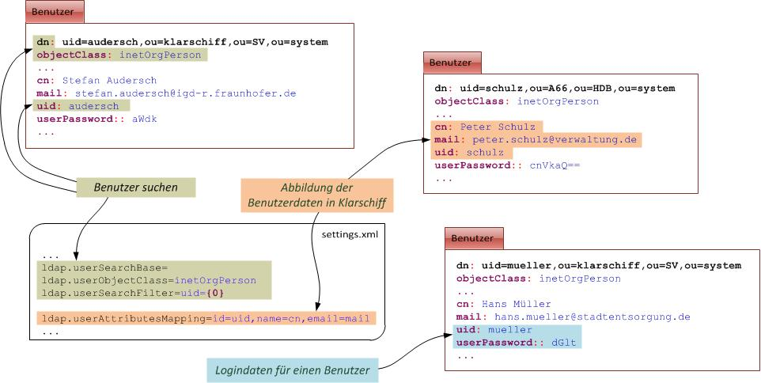
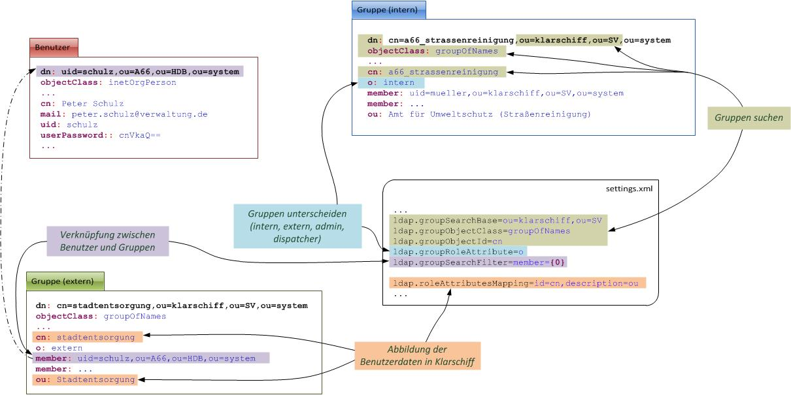
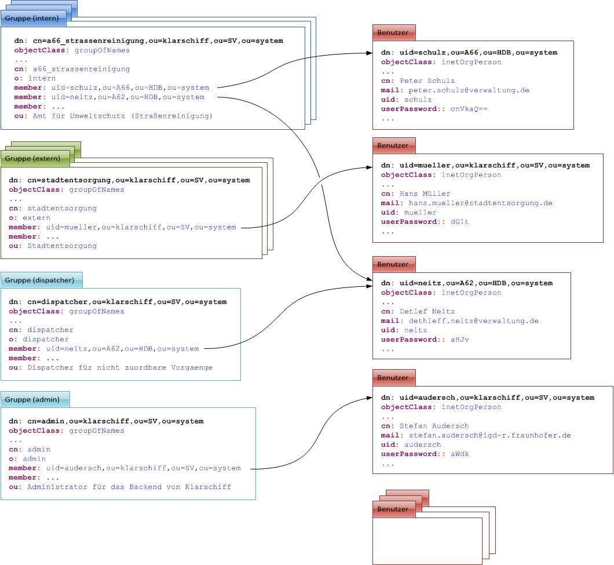

Administrationshandbuch
Klarschiff Backend
erstellt von
Änderungsübersicht
| Version | Datum | Bearbeiter | Beschreibung |
| 1.0 | 10.2011 | Stefan Audersch |
Inhaltsverzeichnis
Voraussetzung für das Backend ist eine PostgreSQL Datenbank mit PostGIS, eine Java Laufzeitumgebung und ein Servlet-Container. Das Aufsetzen sollte in den folgenden Schritten erfolgen:
1. PostgreSQL herunterladen und installieren
Für die Datenhaltung wird eine PostgreSQL Datenbank benötigt. Für das Backend sollte ein PostgreSQL ab der Version 8.x verwendet werden. Diese kann hier
heruntergeladen werden.
Bei er Installation können alle Standareinstellungen beibehalten bleiben. Beim Kodierung sollte UTF-8 als Standard eingestellt werden.
2. PostGIS installieren
Die Installation von PostGIS kann über bei der PostgreSQL-Installation mit installierten Application Stack Builder erfolgen. Hierzu ist dieser mit Adminrechten zu starten. Unter dem Punkt Spatial Extension ist dann PostGIS zu finden, welches dann ab der Version 1.5 installiert werden sollte.
3. Benutzer und Datenbank anlegen
Mit Hilfe des pgAdmin III kann nun bei der Datenbank ggf. ein spezieller Benutzer und eine Datenbank angelegt werden. Im Standardfall sollte der Benutzer für das Backend den Rollennamen klarschiff_backend und das Passwort klarschiff_backend haben. Die neu erstellte Rolle sollte mit entsprechenden Rechten zum Erzeugen von Tabellen, Triggerfunktionen und Triggern sowie mit rechten zum Schreiben, Lesen und Löschen von Daten in Tabellen ausgestattet sein.
Für das Backend kann nun mit pgAdmin III eine neue Datenbank angelegt werden. Die Datenbak sollte im Standardfall den Namen klarschiff_backend haben und als Template sollte template_postgis gewählt werden.
4. Java herunterladen und installieren
Als Runtime ist Java in der Version ab 1.6 notwendig. Ein JDK oder JRE kann unter http://www.oracle.com/technetwork/java/javase/downloads/jdk-6u27-download-440405.html heruntergeladen werden. Dieses ist auf dem Rechner zu installieren.
5. Servlet-Container (Tomcat) herunterladen und installieren
Das in der Entwicklungsumgebung erzeugte Backend ist eine WAR-Datei, welchers in einem Servlet-Container ausgeführt wird. Hierfür kann beispielsweise ein Tomcat verwedet werden. Ein Tomcat ab der Version 7.0 ist notwendig und kann unter http://tomcat.apache.org/download-70.cgi heruntergeladen werden.
Hinweis: Wenn ein Rechner mit Windows Vista oder Windows 7 verwendet wird, sollte die Installation des Tomcats nicht im normalen Programmordner erfolgen, da in diesem das Schreiben von Dateien notwendig ist, was teilweise durch das UAC verhindert bzw. erschwert wird.
Der Tomcat sollte bei der Installation als Dienst eingerichtet werden. Um ein OutOfMemory zu verhindern sollte der Speicher für die VM beim Tomcat entsprechend hoch gesetzt werden.
Die Webanwendung kann ebenfalls in einem Cluster laufen. Hierzu sin dann spezielle Einstellungen notwendig.
6. settings.properties ggf. anpassen
In der WAR-Datei der Webanwendung befindet sich im Verzeichnis WEB-INF\classes\ die Datei settings.properties mit den Einstellungen für das Backend. Hier sollten ggf. Anpassungen vorgenommen werden.
7. Webanwendung deployen
Die WAR-Datei ist beim Tomcat in das Verzeichnis webapps zu kopieren und damit zu deployen.
8. Tomcat starten
Der Tomcat kann nun gestartet werden. Beim Start werden dabei die notwendigen Tabellen in der Datenbank angelegt.
Unter der URL http://localhost:8080/klarschiff.webapp/ sollte nun das Backend erreichbar sein.
Die Konfigurationen und Einstellungen der Anwendung werden an verschieden Stellen vorgenommen. Zentraller Punkt für die Einstellungen ist die settings.properties. Hier können alle Parameter für den Lauf der Anwendung angepasst werden.
Systemspeziefischere Anpassungen, die z.B. bei der Weiterentwicklung vorgenommen werden müssen, können im ApplicationContext (src_main\META-INF\spring\..xml), dem WebApplicationContext (WebContent\WEB-INF\spring\webmvc-config.xml)oder an anderen Stellen vorgenommen werden.
Bei den Einstellungen in der settings.properties können Profile verwendet werden. Diese ermöglichen es verschieden Einstellungen zu definieren, die gleiche Webanwendung auf verscheidenen Rechner zu deployen und da jeweils unterschiedliche Konfigurationen zu verwenden. Welches Profil verwendet wird kann über die Variable KLARSCHIFF_HRO_PROFILE an den folgenden Stellen festgelegt werden:
settings.propertiesDie spezialisierung eines Paramters für ein bestimmtes Profil erfolgt durch ein Voranstellen der Profilnamens in der settings.properties. Werden die Einstellungen beispielsweise folgendermaßen definiert:
mail.from=klarschiffhro@googlemail.com
igd_dev.mail.from=klarschiffhro@igd-r.fraunhofer.de
so wird im Normalfall als Absenderadresse die Emailadresse von Google verwendet. Ist das Profil igd_dev eingestellt, so wird Emailadresse von Fraunhofer verwendet.
Die folgenden Einstellungen können in der settings.properties vorgenommen werden:
mail.server.baseurl.backend und mail.server.baseurl.frontend | Die URLs werden bei der Erzeugung von Emails verwendet und sollten auf die entsprechenden URLs des Frontend und Backend verweisen. |
mail.host | SMTP-Host, der für den Versand der Emails verwendet wird |
mail.smtp.starttls.enable | aktiviert (true) oder deaktiviert (false) die Verschlüsselung mit dem SMTP-Host; Eine Aktivierung wird z.B. bei der Verwendung eines Google-Mail-Accounts benötigt. |
mail.username und mail.password | Benutzername und Passwort für den SMTP-Zugang, wenn dieser benötigt wird |
mail.from | Absenderadresse für die vom System versendeten Emails |
mail.sendAllMailsTo | Wenn hier eine Emailadresse angegeben wird, werden alle Emails an diese Adresse versendet. Dieses ist beispielsweise zum Test der Emailfunktionen sinnvoll. |
database.host, database.port, database.schema, database.dbname, database.username und database.password | Host, Port, Schema, Name der Datenbank, Benutzername und Password der verwendeten Datenbank für das Backend |
database.initscript | Hiermit wird festgelegt, ob das SQL-Script, welches für die Synchronisation der Frontend- und BackendDb auf der Basis von dbLink, ausgeführt wird. Das Script wird nur ausgeführt, wenn noch keine Tabellen in der BackendDb vorhanden sind. Die Ausführung erfolgt nach dem Erzeugen der Tabbellen in der BackendDb. Folgende Werte sind möglich: disabled - Script wird nicht ausgeführt, warn - Script wird ausgeführt und es gibt im Log eine Fehlermeldung bei einem Fehler, error - Script wird ausgeführt und der Start des Backend wird im Fehlerfall abgebrochen |
dbsync.programdir | gibt das Verzeichnis an, wo das Programm zum Synchronisieren der Frontend- und BackendDb auf der Basis von Talend Open Studio liegt. |
job.monthsToArchivVorgaenge | Alter abgeschlossener vorgägnge in Monaten, bis diese automatisch archiviert werden. |
job.hoursToRemoveUnbestaetigtVorgang | Alter von unbestätigten Vorgängen in Stunden, bis diese automatisch gelöscht werden. |
job.hoursToRemoveUnbestaetigtUnterstuetzer | Alter von unbestätigten Unterstutzungen in Stunden, bis diese automatisch gelöscht werden. |
job.hoursToRemoveUnbestaetigtMissbrauchsmeldung | Alter von unbestätigten Missbrauchsmeldungen in Stunden, bis diese automatisch gelöscht werden. |
geo.map.projection | verwendete Projektion im System |
geo.map.tms.server | TMS für die Darstellung der Karten im Backend |
geo.map.tms.server.layers | Layer des TMS, die bei der Kartendarstellung verwendet werden sollen. Format: :[LayernameBeimTms1],[LayerNameInDerAnzeige2]:[LayernameBeimTms2],... |
geo.map.maxExtent | Begrenzen der Daten der Karte |
geo.map.restrictedExtent | maximal anzuzeigende Größe der Karte |
geo.map.resolutions | Zoomstufen |
geo.map.ovi.margin | Darzustellender Umkreis bei der Anzeige eines Ortes |
geo.map.extern.projection | Projektion im externen System (geo.map.extern.url) |
geo.map.extern.url | URL zur Darstellung eines Vorganges in einem externen System (es können die Variablen %x%, %y% und %id% verwendet werden) |
geo.map.extern.extern.url | URL zur Darstellung eines Vorgangs in einem Externen System, was von jedem Nutze im Internet aufgerufen werden kann (es können die Variablen %x%, %y% und %id% verwendet werden) |
geo.wfs.url | URL zum Aufruf der Capabilities des WFS |
geo.wfs.wfs.exception.handling | ExceptionHandling beim Initalisieren des WFS (warn - Fehlermeldungen werden in das Log geschrieben, error - der Start der Webanwendung wird bei einem Fehler abgebrochen) |
geo.wfs.ovi.buffer | Umkreis in Mettern, der bei der Berechnung der Features für den Zuständigkeitfinder berücksichtigt werden soll |
proxy.host und proxy.port | Proxyeinstellungen, die der Server zur Kommunikation mit dem Internet benötigt. Dieses wird z.B. für die Kommunikation mit WFS |
Es kann ein LDAP-Sever verwendet werden oder auf der Basis einer LDIF-Datei lokal ein LDAP mitgestartet werden, der dann verwendet wird. Hierzu ist jeweils der eine Parameter ldap.server.ldif oder ldap.server.url zu setzen und der andere frei zu lassen.
ldap.server.ldif | Wenn der Wert gesetzt ist, wird ein lokaler LDAP gestartet und die Daten aus der hier angegebenen LDIF-Datei verwendet. |
ldap.server.url | URL eines LDAP-Servers. |
ldap.root | Rootpfad für die Anfragen an den LDAP |
ldap.managerDn und ldap.managerPassword | zugangsdaten für den LDAP-Server |
ldap.userSearchBase | Pfad in dem nach Benutzern gesucht werden soll |
ldap.userObjectClass | Objektklasse für Benutzer |
ldap.userSearchFilter | Filter zum suchen von Benutzern |
ldap.groupSearchBase | Pfad in dem nach Gruppen gesucht werden soll |
ldap.groupObjectClass | Objektklasse für Gruppen |
ldap.groupRoleAttribute | Attribut in dem bei den Gruppen die Rolle intern oder extern gesetzt ist |
ldap.groupSearchFilter | Filter in denen bei den Gruppen nach Benutzern gesucht wird |
ldap.groupObjectId | Attribut mit der ID für die Gruppe |
ldap.userAttributesMapping | Mapping für das Auslesender Daten eines Benutzers beim LDAP. Format: =[AttributNameLdap1],[AttributNameAnwendung2]=[AttributNameLdap2],... |
ldap.roleAttributesMapping | Mapping für das Auslesender Daten einer Gruppe beim LDAP. Format: =[AttributNameLdap1],[AttributNameAnwendung2]=[AttributNameLdap2],... |
die folgenden abbildungen stellen zur nähren Erläuterung dar, wie Benutzer und Gruppen im LDAP abzubilden sind und wie die Einstellungen in der settings.properties hierzu in Beziehung stehen.

Abbildung: Abbildung von Benutzern im LDAP
Benutzer benötigen eine uid und ein userPassword, welche für das Login verwendet werden. Der Name (cn) und die Mailadresse (mail) werden im Backend für die Anzeige von Verlaufsdaten und für den Mailversand verwendet.

Abbildung: Abbildung von Gruppen im LDAP
Bei den Gruppen wird zwischen intern, extern, dispatcher und admin unterschieden. Die Gruppen dispatcher und admin existieren im LDAP nur jeweils einmal. die Gruppen für intern und extern existieren i.d.R. mehrfach. Die Namen der Gruppen (cn) und die Beschreibung (ou) werden bei der Anzeige der Zuständigkeit bzw. beim Delegieren verwendet.

Abbildung: Beziehungen zwischen Benutzern und Gruppen im LDAP
Die Verknüpfung der Gruppen mit Benutzern erfolgt über das Attribut member bei der Gruppe. Einer Gruppe können dabei mehrere Benutzer zugeordnet sein, als auch ein Benutzer kann mehreren Gruppen angehören.
show.logins | Aktiviert (true) oder deaktiviert (false) eine anzeige von statischen Logindaten unter dem Login |
vorgang.idee.unterstuetzer | Anzhal der Unterstützungen, die ien Idee benötigt, damit sie in der einfachen Suche angezeigt wird |
show.fehler.details | Aktiviert (true) oder deaktiviert (false) die ausführliche Fehleranzeige in der Webanwendung |
bug.tracking.url | URL auf ein Bugtracking-System, die bei einem Fehler angezeigt wird |
version | Bezeichnung der Version, die im Footer angezeigt werden soll |
Das Backend von Klarschiff ist für den Lauf in einem Cluster vorbereit. Hierzu wurden die folgenden Vorbereitungen getroffen:
java.io.Serializable damit die Sessions zwischen den einzelnen Clients im Cluster synchronisiert werden können.web.xml ist der Tag <distributable/> aktiviert.Damit das Backend in einem Cluster laufen kann, müssen die folgenden Schritte vorgenommen werden:
server.xml des einzelnen Tomcat muss eine ID für den Client (jvmRoute="worker1") vergeben werden und der Lauf in einem Cluster muss aktiviert werden (<Cluster .../>). <Engine defaultHost="localhost" name="Catalina" jvmRoute="worker1">
<Cluster className="org.apache.catalina.ha.tcp.SimpleTcpCluster"/>
...
</Engine>
Nähere Information zum einrichten eines Tomcat in einem Cluster ist beispielsweise unter http://www.easywayserver.com/implementation-tomcat-clustering.htm zu finden.